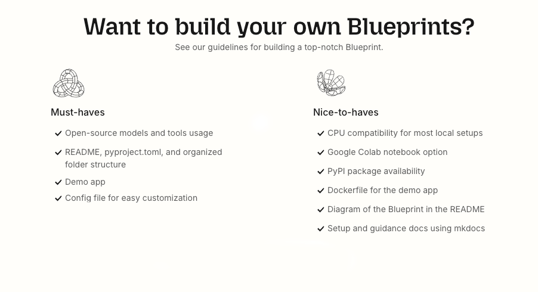

Guide on how to use the Blueprint Template
This documentation is intended for developers who want to create a new Blueprint using this template.
Guidelines

[!NOTE] If the guidelines above do not align with your project, feel free to modify them to suit your needs. Keep in mind however that the aim of Blueprints is to provide strong foundations for reusable open-source AI workflows, meant to be shared by the community.
Directory Overview
blueprint-template/
├── .devcontainer/ # Configuration for GitHub Codespaces
├── .github/ # GitHub workflows and issue templates
├── demo/ # Demo application code
├── src/ # Core Blueprint code
├── docs/ # Documentation files
├── tests/ # Unit and integration tests
├── .gitignore # Add files you don't want to track in Git
├── .pre-commit-config.yaml # Pre-commit hooks configuration
├── CODE_OF_CONDUCT.md # Code of conduct for contributors
├── CONTRIBUTING.md # Contribution guidelines
├── LICENSE # License file for the project
├── mkdocs.yml # MkDocs configuration for documentation
├── pyproject.toml # Project dependencies and configuration
├── README.md # Project overview and quick start guide
First steps
1. Replace any templated mentions with your Blueprint's project name
You will find mentions of blueprint-template in multiple files throughout the repository. You should replace these with your Blueprint's project name.
The easiest way to do this is to use a text editor / IDE (VS Code, PyCharm, etc.) that supports find-and-replace across files and look for blueprint-template and replace it with your desired Blueprint name.
2. Update the pyproject.toml file
Make sure that the pyproject.toml file reflects the correct project name, version, description, and author information. Most importantly, you should define the dependencies your Blueprint requires in the [tool.poetry.dependencies] section.
3. Remove any files or directories that are not relevant to your Blueprint
To keep your Blueprint repository clean and focused, you can remove any files or directories that are not relevant to your project. For example, if you don't plan to use GitHub Codespaces, you can remove the .devcontainer directory. Similarly, if you are not going to use GitHub workflows, you can remove the .github/workflows directory to remove the automated checks.
4. Update the demo application and all the related files
By default, there is a placeholder demo application using streamlit in the demo directory. If you are not comfortable with streamlit, you can replace it with a demo application using any framework you prefer (e.g., Gradio, Marimo, etc.). Make sure to update the demo/Dockerfile, demo/run.sh and .github/setup.sh (if you want to have support for GitHub Codespaces), accordingly if you are using a different framework.
5. Update the documentation files
Make sure to go through each markdown file in the docs directory and update the content to reflect your Blueprint's functionality and features. Ensure that the api.md is edited to point to the correct modules and functions in your src directory. You can use the mkdocs.yml file to configure how the documentation is built and displayed.
Explaining the Directory Structure
.devcontainer
This .json includes the configuration for a GitHub codespaces container. This can be useful if your demo has low hardware requirements and can be run in an isolated container environment. It allows users to quickly set up a development environment with all necessary dependencies pre-installed and run the demo without needing to install anything locally.
[!TIP] The
devcontainer.jsonfile points to the .github/setup.sh script that installs the required dependencies of the Blueprint and sets up the environment. Make sure to update this script accordingly.
.github
This directory contains GitHub workflows for CI/CD, issue templates, and pull request templates.
CI/CD Workflows
The CI/CD workflows defined there are to automate:
- building the documentation of the Blueprint with mkdocs
- running the pre-commit hooks with pre-commit to ensure code quality and consistency (ruff, codespell, etc)
- publish the code as a pip package to PyPI
- running tests with defined in the tests directory with pytest
NOTE: If you are not going to use some of these features, you can remove the corresponding files from the .github/workflows directory.
Ruleset.json
GitHub provides a way to define repository rules through a ruleset.json file, specifically around branch protection (e.g. main branch must pass all tests before merging).
If you want to use the provided ruleset, you will need to:
1. Go to your repository settings
2. Navigate to "Rules/Rulesets"
3. Click "New Ruleset"
4. Select "Import a ruleset"
5. Upload the ruleset.json file from this template
demo
You can use any framework you prefer to build a quick demo application that showcases the functionality of your Blueprint. Feel free to check out some of our existing Blueprints to see how we implemented demos using Gradio, Streamlit or Marimo.
docs
This directory contains markdown files that will be used to generate the documentation for your Blueprint using MkDocs. Make sure to go through each one and update the content to reflect your Blueprint's functionality and features.
src
Here is where the magic happens! Any core logic of your Blueprint should reside here. You can structure it as you see fit, but we recommend following a modular approach to keep your code organized and maintainable.
tests
Following best practices, we recommend writing unit, integration and/or end-to-end tests for your Blueprint. This directory is where you can place your test files. You can use any testing framework you prefer, but we recommend using pytest since this template already comes with a GitHub action workflow for pytest already.
.pre-commit-config.yaml
While developing your Blueprint, its good practice to install pre-commit (pip install pre-commit & pre-commit install) to ensure code quality and consistency. This file contains the configuration for pre-commit hooks that will run automatically before each commit. It includes checks for code style, linting, and spell checking.
pyproject.toml
This file is used to define the dependencies and configuration for your Blueprint. Make sure to update it with the necessary packages your Blueprint requires. This file is also used by the GitHub action workflow to build and publish your Blueprint as a pip package.